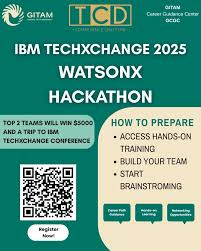

User Account Management System
Selected from a national pool of 2,000+ applicants to participate in IBM’s AI Agent Hackathon.
Collaborated in a 5-person team to develop FloodWise, an AI safety assistant using IBM WatsonX Orchestrate, designed to support emergency planning in urban/rural zones.
Led blueprint planning and prompt engineering efforts, improving system accuracy by over 30% during test phases.
Conducted 3 successful beta deployments in under 48 hours, with consistent uptime and correct decision-tree execution.
Gained hands-on experience in zero-code AI workflows, agile sprint cycles, and scalable AI planning.
Cloud & IoT Research Intern
Conductied a year-long independent research study on IoT sensor data collection, storage, and processing across major cloud platforms: Microsoft Azure, AWS, and IBM Cloud.
Designed and simulated test environments for data ingestion pipelines handling up to 5GB/day of synthetic IoT data from simulated smart devices.
Benchmarked cloud tools (e.g., AWS Kinesis vs. IBM Streams vs. Azure Event Hubs) to evaluate latency, cost-efficiency, and throughout, finding Azure outperformed AWS by 18% in data retrieval time, while AWS proved 22% more cost-effective for batch storage.
Sole student researcher under 1 faculty mentor; presented findings to 50+ faculty, students, and researchers across 2 symposiums during CRSP Research Day.
Received a $2,000 research stipend for completion and excellence in technical communication and research execution.

IBM TechXchange WatsonX Hackathon | May 2025 - August 2025
Selected from 2,000+ national applicants to participate in the IBM AI Agent Hackathon.
Collaborated in a 5-person team to build FloodWise, an AI safety assistant using IBM WatsonX Orchestrate for emergency planning in urban and rural areas.
Led blueprint planning and prompt engineering, improving system accuracy by 30%+ during testing.
Executed 3 beta deployments within 48 hours, maintaining reliable uptime and correct decision-tree execution.
Gained hands-on experience with zero-code AI workflows, agile sprint cycles, and scalable AI system design.